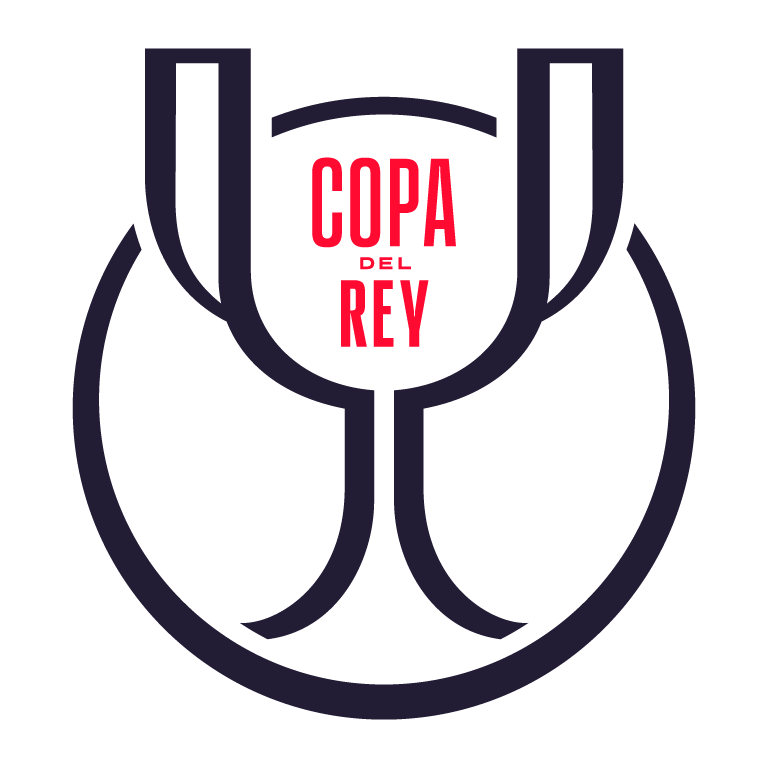

The Campeonato de España–Copa de Su Majestad el Rey,[a] commonly known as Copa del Rey,[b] La Copa[c] or (in English) the Spanish Cup[1]
or King's Cup, and formerly known as Copa del Presidente de la República[d] (1932–1936) and Copa del Generalísimo[e] (1939–1976), is an annual
knockout football competition in Spanish football, organized by the Royal Spanish Football Federation.
The competition was founded in 1903, making
it the oldest Spanish football competition played at a national level. Copa del Rey winners qualify for the following season's UEFA Europa League. If
they have already qualified for Europe through their league position, the Europa League spot is given to the highest-placed team in the league who has not
yet qualified (until 2014 this place was awarded to the Copa runners-up, unless they too had already qualified via the league).[2]
Barcelona is the most successful
club in the competition, having won 32 titles. Athletic Bilbao has the second-most wins with 24, while Real Madrid is third with 20. Real Sociedad is the current
title holder, having defeated Atlético Madrid in the 2026 final held at the Estadio de La Cartuja.
